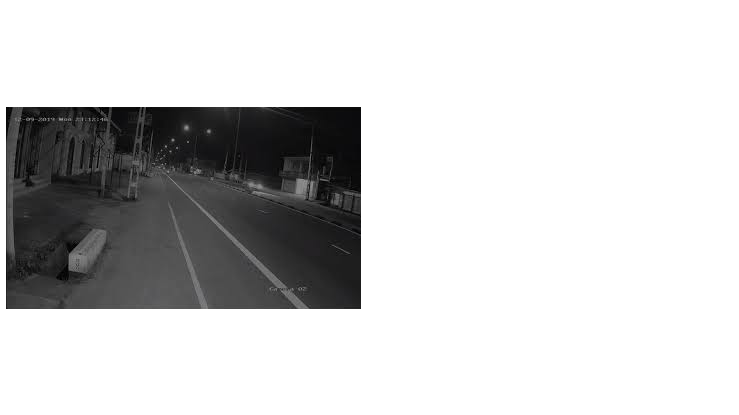
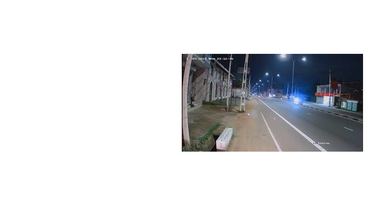

01
ColorVu 1.0
Capture usable color in very low light
F1.0 optics and advanced sensors were the foundation of ColorVu's full-color night imaging approach.
Explore ColorVu 3.0 from the inside out - from full-colour low-light imaging and HikAI-ISP to Smart Hybrid Light, analytics and model-level differences. This guide helps you understand the technology, compare representative cameras and identify the right starting point for your scene.

Low-light scenes can lose color cues, fine texture and contextual detail. Good surveillance design starts by protecting the information that helps a person understand what happened - not simply producing a bright image.


Color can preserve context
Detail supports human review
Lighting strategy changes the scene
Hikvision describes ColorVu as an evolution of low-light imaging, with each generation adding optical, illumination or image-processing improvements. ColorVu 3.0 puts HikAI-ISP at the center of the current proposition.
F1.0 optics and advanced sensors were the foundation of ColorVu's full-color night imaging approach.
Hikvision added F1.0 IR-confocal optics and Smart Hybrid Light to manage IR and white-light illumination more intelligently.
HikAI-ISP targets noise, motion trails, brightness and detail; current product families also add broader intelligence and model-specific audio or deterrence options.
ColorVu 3.0 is a platform proposition, not a single specification. The right question is how the imaging stack, illumination and analytics work together in a specific model.
AI-assisted image processing designed to reduce noise and motion trails while preserving useful detail in low light.
Core ColorVu 3.0 capability • model implementation variesColor correction using 3D lookup-table processing to improve calibration and color matching.
Published on current Value Series ColorVu 3.0 pagesScene-aware WDR behaviour intended to improve visibility when bright and dark areas share the frame.
Availability and implementation vary by modelThree lighting modes: IR, white light and Smart mode. In Smart mode, white light can be triggered by an event to add color and detail.
On applicable Smart Hybrid Light modelsHelps the camera focus analytics on people and vehicles rather than treating every motion source equally.
Current ColorVu 3.0 examples use Motion Detection 3.0 or related deep-learning analyticsSelected models add microphones, two-way audio, strobe lights or audible alarms for a more active response layer.
Selected model / suffix only - confirm before specificationSpecification discipline. A technology name does not mean every ColorVu 3.0 camera has every feature. Model suffixes, optics, illumination, audio, storage and protection ratings should be verified as separate specification points.
These are representative current models used to make the range tangible. They are examples, not a statement that every model is stocked or locally available.
This quick guide helps narrow the design conversation. It does not replace a site survey or optical coverage calculation.
A flexible choice for walls or ceilings where you want a clean, adjustable viewing angle.
Think about glare, mounting height, lens angle and access for servicing.A familiar outdoor form that often works well for entrances, yards and perimeter-facing positions.
Check how the housing, lens and light range fit the viewing distance.A compact form for locations where the visual footprint, vandal resistance or flush presentation matter.
On some current ColorVu 3.0 models, IK ratings and audio options vary by suffix.Useful where the field of view needs to be tuned during installation rather than fixed in advance.
Use the actual focal range and target distance to make the choice.Resolution is only one part of image performance. Lens choice, scene lighting, shutter behaviour, viewing distance, storage and bandwidth all affect the result.
How much spatial detail does the target need?
Where is that detail placed in the frame?
Can the network and recorder sustain it at the chosen bit rate?
Can the sensor, optics and illumination keep detail usable at night?
Protect entrances, gates and driveways where context and recognisable color can help a homeowner understand an event.
Start with this →Prioritise entrances, payment areas and outside approaches. Consider glare, customer lighting and camera position.
Start with this →Use compact forms around lobbies and access zones, with night imaging matched to architectural lighting.
Start with this →Outdoor approaches may need stronger illumination strategy, greater detail and weather or corrosion considerations.
Start with this →Longer distances change the lens conversation. Validate DORI, mounting height, light spill and target size before selection.
Start with this →Good CCTV specification is a chain of decisions. Pixel count comes later than understanding the scene.
Talk through your site →Ambient light, glare, darkness and whether visible white light is acceptable.
How far is the target, and what do you actually need to recognise?
Fixed, wider or more focused - the field of view shapes what pixels mean.
Person/vehicle classification and event logic can reduce irrelevant motion.
Weather, dust, vandal exposure and, for some models, corrosion requirements.
PoE, bandwidth, storage, recording and maintenance all affect the final system.
Use the model links for complete datasheets. The table below deliberately shows only verified, decision-relevant fields.
| Model | Resolution | Form | Lens | Night / Light | Protection | Other notes |
|---|---|---|---|---|---|---|
| DS-2CD1047G3H-LIU(F)(/SL)(/SRB) | 4MP | Fixed bullet | 2.8 / 4mm | 0.0001 lux @ F1.0; Smart Hybrid Light | IP67 | Motion Detection 3.0; optional audio/strobe on suffixes |
| DS-2CD1147G3H-LIU(F) | 4MP | Fixed dome | 2.8 / 4mm | ColorVu 3.0; Smart Hybrid Light | IP67 / IK08 | Optional onboard SD on -F |
| DS-2CD2347G3-LI2UY | 4MP | Fixed turret | 2.8 / 4mm | 0.0001 lux @ F1.0; Smart Hybrid Light | IP67 | Person/vehicle classification |
| DS-2CD2087G3-LI2UY/SL | 8MP / 4K | Mini bullet | 2.8 / 4mm | 0.0005 lux @ F1.0; IR/white up to 40m | IP67 | Two-way audio; active strobe/audio; NEMA 4X anti-corrosion design |
| DS-2CD2387G3-LIS2UY/SL | 8MP / 4K | Fixed turret | 2.8 / 4mm | 0.0005 lux @ F1.0; smart supplement light up to 30m | Model-specific | Two-way audio and active deterrence on /SL variants |
Use the FAQ to understand the technology. For a final design, match the camera to the scene.
Hikvision's current ColorVu 3.0 proposition combines 24/7 colorful imaging with HikAI-ISP and, on applicable product lines, technologies such as AI 3D LUT, AI WDR and Smart Hybrid Light.
ColorVu cameras are designed for very low light, but color imaging still needs light. Some current models specify 0 lux with supplemental light, meaning their white-light illuminator is providing the visible light needed to capture color.
No. Resolution, lens, audio, storage, illumination range, deterrence, analytics and protection ratings vary by model and suffix. This site labels model-dependent features rather than generalising across the range.
Hikvision describes three supplemental modes: IR, white light and Smart mode. In Smart mode the camera can stay in IR until an event involving a person or vehicle triggers white light for color imaging, then return to IR.
It is Hikvision's AI-assisted image processing approach for ColorVu 3.0, targeting noise reduction, motion trail reduction, brightness and detail in challenging lighting.
Neither is automatically better. 4K provides more pixels, but the best result still depends on lens choice, target size, light, shutter behaviour, network capacity and storage.
Both can be strong choices. The decision usually depends on mounting position, aiming flexibility, housing, lighting, lens and how visible the camera should be. Use the scene rather than the shape alone.
Many current ColorVu 3.0 models are outdoor-rated - examples on this page include IP67 models - but the exact rating must be checked on the chosen camera. Vandal and corrosion ratings can also be model-specific.
Not always. Different ColorVu models use different optical and supplemental-light strategies. Smart Hybrid Light adds IR and white-light options where supported.
Start with the scene, target distance, light, mounting point, lens and desired analytics. Use the selector here as a starting conversation, then confirm the final model through a site survey and datasheet review.
Use the enquiry form below.
Tell us the site type, target area, distance and lighting conditions. We can then narrow the ColorVu 3.0 options worth considering.
DAVEX uses this product experience to make the Hikvision ColorVu 3.0 camera conversation clearer: what the technology does, which models have which features, and what needs to be checked before a camera is specified.
Hikvision remains the product manufacturer; DAVEX is the commercial presenter.
Features are separated by model and suffix where necessary.
Scene, lens, distance and light guide final specification.